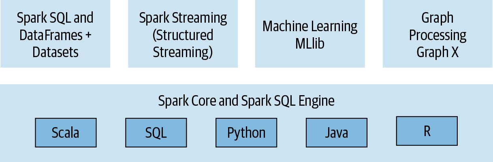

Lecture 6
Intro to Spark
Georgetown University
Fall 2025
Looking Back
- Intro to Hadoop and MapReduce
- Hadoop Streaming
- Dask
Today
Bye bye, Hadoop…
- Intro to Spark
- Spark RDDs
- Spark DataFrames
- SparkSQL
- DataBricks on Azure
- Spark ML
- Spark Streaming
- Lab:
- Start a Hadoop cluster on AWS Elastic MapReduce (EMR) with a bootstrap script
- Use Jupyter and Pyspark as front end to Spark
- Get to know Spark RDDs and DataFrames
Looking back at distribuing computations
Starting with our BIG dataset
The data is split
The data is distributed across a cluster of machines
You can think of your split/distributed data as a single collection]
Important Latency Numbers
Memory vs. Disk
Memory vs. Network
Memory, Disk and Network
MapReduce/Hadoop was groundbreaking
It provided a simple API (map and reduce steps)
It provided fault tolerance, which made it possible to scale to 100s/1000s of nodes of commodity machines where the likelihood of a node failing midway through a job was very high
- Computations on very large datasets failed and recovered and jobs completed
Fault tolerance came at a cost!
- Between each map and reduce step, MapReduce shuffles its data and writes intermediate data to disk
- Reading/writing to disk is 100x slower than in-memory
- Network communication is 1,000,000x slower than in-memory
Start your Spark Cluster on AWS
Introducing Spark: a Unified Engine
What is Spark

A simple programming model that can capture streaming, batch, and interactive workloads
Retains fault-tolerance
Uses a different strategy for handling latency: it keeps all data immutable and in memory
Provides speed and flexibility
Spark Stack

Connected and extensible

Three data structure APIs
RDDs (Resilient Distributed Datasets)
DataFrames SQL-like structured datasets with query operations
Datasets A mixture of RDDs and DataFrames
We’ll only use RDDs and DataFrames in this course.
Spark Architecture and job flow

Spark vs. Hadoop
| Hadoop Limitation | Spark Approach |
|---|---|
| For iterative processes and interactive use, Hadoop and MapReduce’s mandatory dumping of output to disk proved to be a huge bottleneck. In ML, for example, users rely on iterative processes to train-test-retrain. | Spark uses an in-memory processing paradigm, which lowers the disk IO substantially. Spark uses DAGs to store details of each transformation done on a parallelized dataset and does not process them to get results until required (lazy). |
| Traditional Hadoop applications needed the data first to be copied to HDFS (or other distributed filesystem) and then did the processing. | Spark works equally well with HDFS or any POSIX style filesystem. However, parallel Spark needs the data to be distributed. |
| Mappers needed a data-localization phase in which the data was written to the local filesystem to bring resilience. | Resilience in Spark is brough about by the DAGs, in which a missing RDD is re-calculated by following the path from which the RDD was created. |
| Hadoop is built on Java and you must use Java to take advantage of all of it’s capabilities. Although you can run non-Java scripts with Hadoop Streaming, it is still running a Java Framework. | Spark is developed in Scala, and it has a unified API with so you can use Spark with Scala, Java, R and Python. |
Introducing the RDD
Example: word count (yes, again!)
The “Hello, World!” of programming with large scale data.
# read data from text file and split each line into words
rdd = sc.textFile("...")
count = rdd.flatMap(lambda line: line.split(" ")) \
.map(lambda word: (word, 1)) \
.reduceByKey(lambda a,b:a +b) # sum all the 1's for each keyThat’s it!
Transformations and Actions (key Spark concept)

How to create and RDD?
RDDs can be created in two ways:
Transforming an existing RDD: just like a call to
mapon a list returns a new list, many higher order functions defined on RDDs return a new RDDFrom a
SparkContextorSparkSessionobject: theSparkContextobject (renamedSparkSession) can be though of as your handle to the Spark cluster. It represents a connection between the Spark Cluster and your application/client. It defines a handful of methods which can be used to create and populate a new RDD:parallelize:converts a local object into an RDDtextFile:reads a text file from your filesystem and returns an RDD of strings
Transformations and Actions
Spark defines transformations and actions on RDDs:
Transformations return new RDDs as results.
Actions compute a result based on an RDD which is either returned or saved to an external filesystem.
Transformations and Actions
Spark defines transformations and actions on RDDs:
Transformations return new RDDs as results.
Transfomations are lazy, their result RDD is not immediately computed.
Actions compute a result based on an RDD which is either returned or saved to an external filesystem.
Actions are eager, their result is immediately computed.
Common RDD Transformations
| Method | Description |
|---|---|
map |
Expresses a one-to-one transformation and transforms each element of a collection into one element of the resulting collection |
flatMap |
Expresses a one-to-many transformation and transforms each element to 0 or more elements |
filter |
Applies filter function that returns a boolean and returs an RDD of elements that have passed the filter condition |
distinct |
Returns RDD with duplicates removed |
Common RDD Actions
| Method | Description |
|---|---|
collect |
Returns all distributed elements of the RDD to the driver |
count |
Returns the number of elements in an RDD |
take |
Returns the first n elements of the RDD |
reduce |
Combines elements of the RDD together using some function and returns result |
collect CAUTION

Another example
Let’s assume that we have an RDD of strings which contains gigabytes of logs collected over the previous year. Each element of the RDD represents one line of logs.
Assuming the dates come in the form YYYY-MM-DD:HH:MM:SS and errors are logged with a prefix that includes the word “error”…
How would you determine the number of errors that were logged in December 2019?
Caching and Persistence
By default, RDDs are recomputed every time you run an action on them. This can be expensive (in time) if you need to use a dataset more than once.
Spark allows you to control what is cached in memory.
To tell spark to cache an object in memory, use persist() or cache():
cache():is a shortcut for using default storage level, which is memory onlypersist():can be customized to other ways to persist data (including both memory and/or disk)
Using memory is great for iterative workloads
DataFrames
DataFrames in a nutshell
DataFrames are…
Datasets organized into named columns
Conceptually equivalent to a table in a relational database or a data frame in R/Python, but with richer optimizations under the hood.
A relational API over Spark’s RDDs
Because sometimes it’s more convenient to use declarative relational APIs than functional APIs for analysis jobs:
selectwherelimit
orderBygroupByjoin
Able to be automatically aggresively optimized
SparkSQL applies years of research on relational optimizations in the database community to Spark
DataFrame Data Types
SparkSQL’s DataFrames operate on a restricted (yet broad) set of data types. These are the most common:
- Integer types (at different lengths):
ByteType,ShortType,IntegerType,LongType - Decimal types:
Float,Double BooleanTypeStringType- Date/Time:
TimestampType,DateType
A DataFrame

Getting a look at your data
There are a few ways you can have a look at your data in DataFrames:
show()pretty-printsDataFramein tabular form. Shows first 20 elementsprintSchema()prints the schema of yourDataFramein a tree format.
Common DataFrame Transformations
Like on RDD’s, transformations on DataFrames are:
- Operations that return another
DataFrameas a results - Are lazily evaluated
Some common transformations include:
| Method | Description |
|---|---|
select |
Selects a set of named columns and returns a new DataFrame with those columns as a result |
agg |
Performs aggregations on a series of columns and returns a new DataFrame with the calculated output |
groupBy |
Groups the DataFrame using the specified columns, usually used before some kind of aggregation |
join |
Inner join with another DataFrame |
Other transformations include: filter, limit, orderBy, where.
Specifying columns
Most methods take a parameter of type Column or String, always referring to some attribute/column in the the DataFrame.
You can select and work with columns in ways using the DataFrame API:
Using $ notation:
df.filter($"age" > 18)Referring to the DataFrame:
df.filter(df("age") > 18)Using SQL query string:
df.filter("age > 18")
Filtering in SparkSQL
The DataFrame API makes two methods available for filtering: filter and where. They are equivalent!
is equivalent to
Use either DataFrame API and SparkSQL
The DataFrame API and SparkSQL syntax can be used interchangeably!
Example: return the firstname and lastname of all the employees over the age over 25 that reside in Washington D.C.
DataFrame API
SparkSQL
Grouping and aggregating on DataFrames
Some of the most common tasks on structured data tables include:
- Grouping by a certain attributed
- Doing some kind of aggregation on the grouping, like a count
For grouping and aggregating, SparkSQL provides a groupBy function which returns a RelationalGroupedDataset which has several standard aggregation functions like count, sum, max, min, and avg.
How to group
- Call a
groupByon a specific attribute/column of a DataFrame - followed by a call to
agg
Actions on DataFrames
Like RDDs, DataFrames also have their own set of actions:
| Method | Description |
|---|---|
collect |
Returns an array that contains all the rows in the DataFrame to the driver |
count |
Returns the number of rows in a DataFrame |
first |
Returns the first row in the DataFrame |
show |
Displays the top 20 rows in the DataFrame |
take |
Returns the first n rows of the RDD |
collect CAUTION
Limitations on DataFrame
- Can only use DataFrame data types
- If your unstructured data cannot be reformulated to adhere to some kind of schema, it would be better to use RDDs.